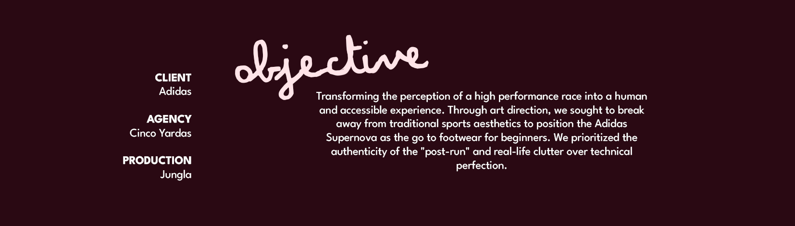
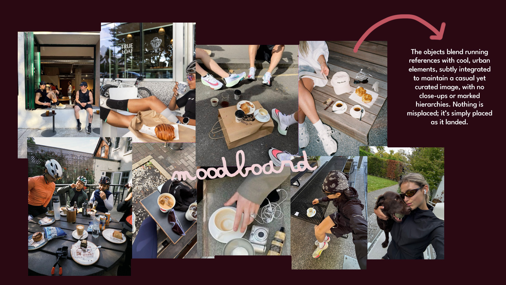

ADIDAS - SUPERNOVA 10K
Production by JUNGLA

CONCEPT: CONTROLLED IMPERFECTION
We worked with the aesthetics of imperfection as something aspirational: a space that feels lived-in, shared, and real.
It’s all about the crossover between the run and the coffee. Between doing it right and doing it as it comes. That "in between" is where the imperfect, the human, and the fun with friends emerge. We aren't looking for a perfect sporty look, but rather the post-run mess that invites people to sign up for the race, not just for performance, but to be part of an experience.
